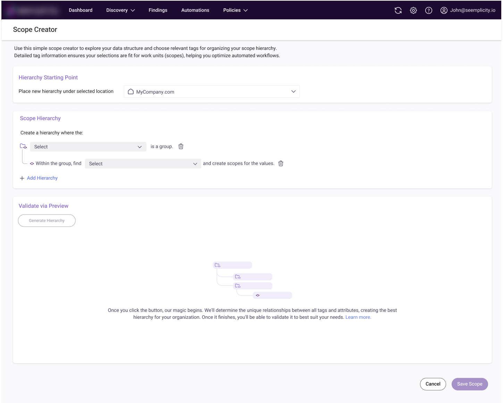
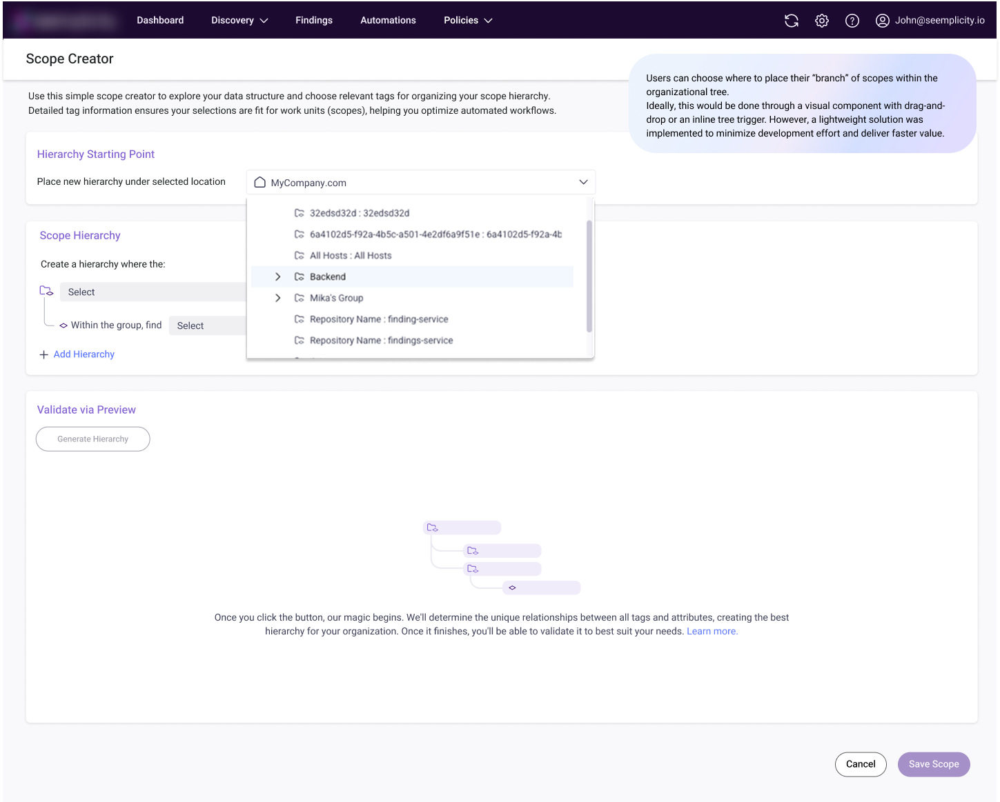
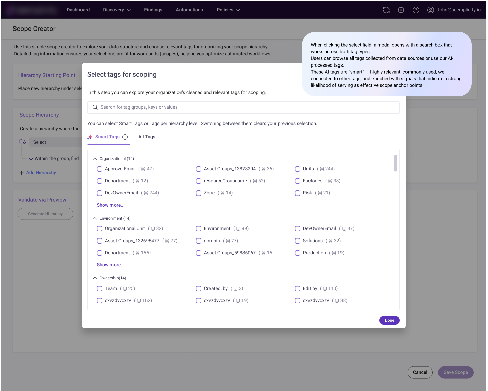
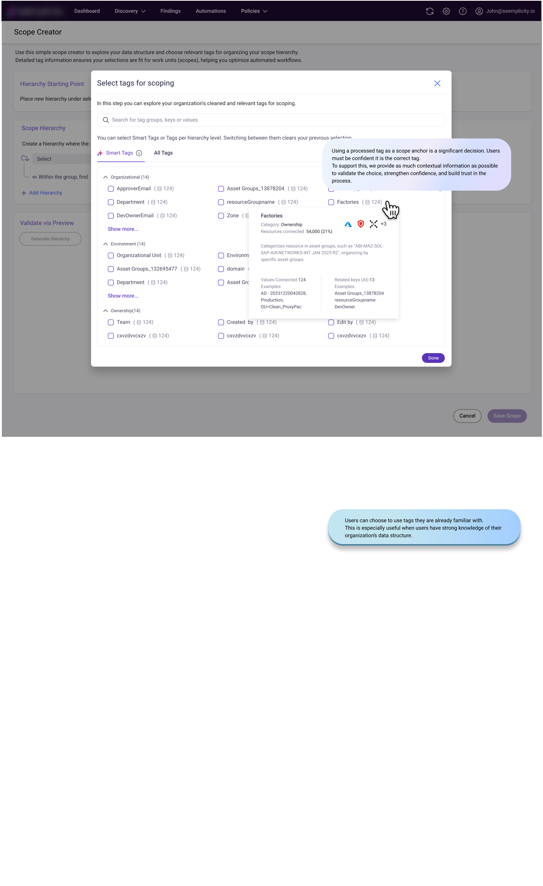
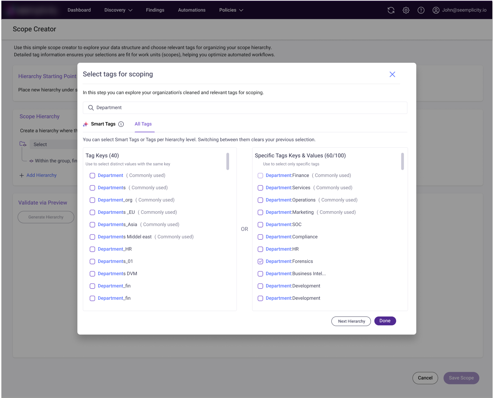
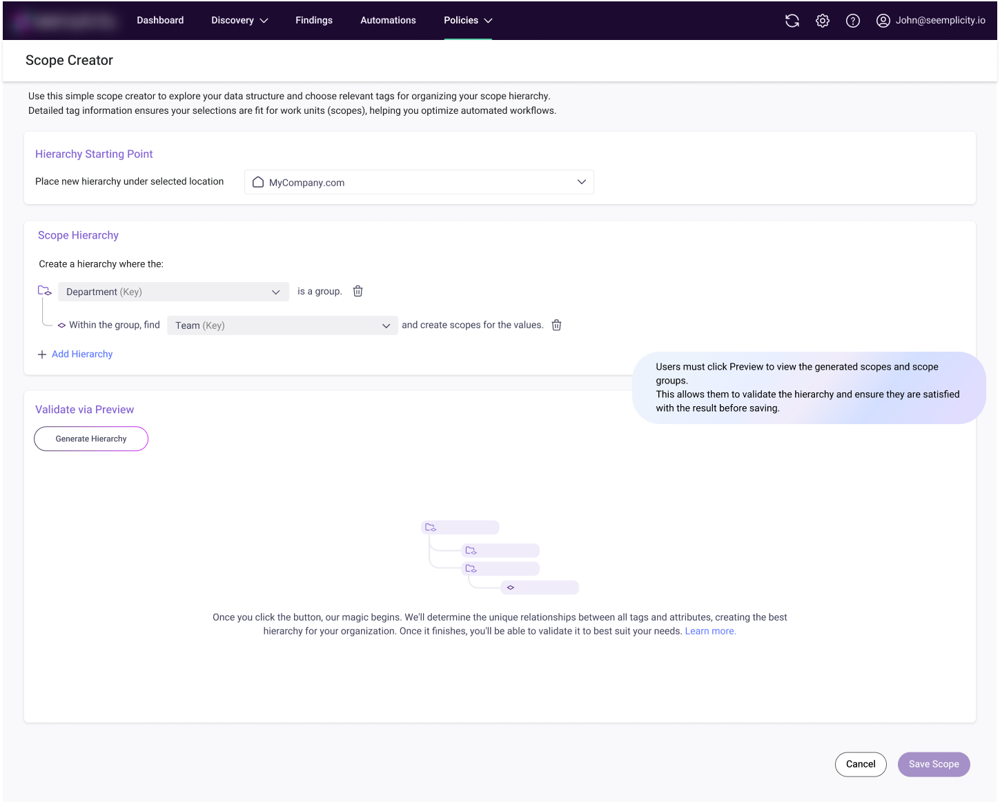
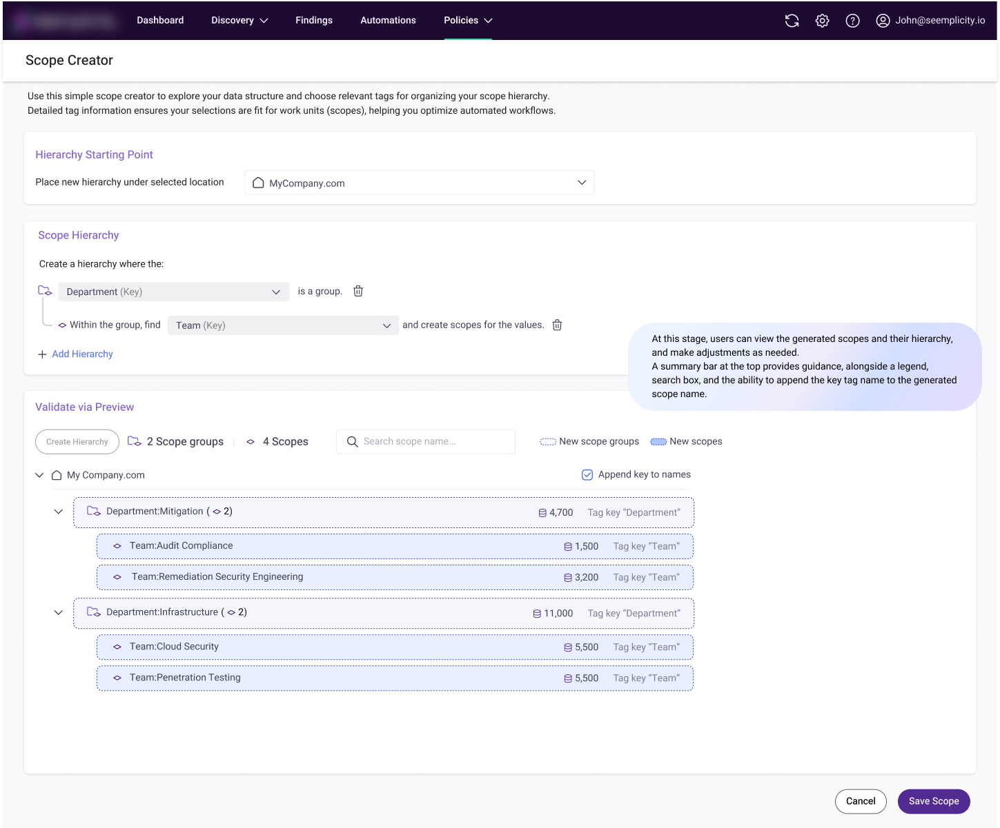
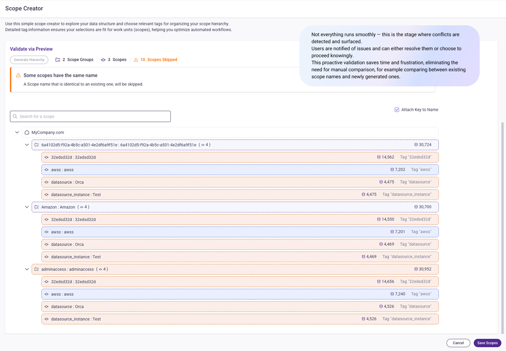

Scopes Hierarchy Creator
Builds resource hierarchies quickly and boosts users' time-to-value.
What are we trying to fix?
Context
Scopes and filters are the foundational building blocks of any system usage. All data presentation relies on two core concepts:
- Resource filters (Scopes)
- Findings filters
Challenge
Building scopes can be complex and time-consuming. It delays time-to-value, requires organizational effort to understand data structures, and forces decisions about how to distribute data (e.g., by geography, teams, or expertise). Each organization has its own structural considerations, which adds further complexity.
Goal
Streamline and simplify the scope-building process to reduce effort, accelerate onboarding, and shorten time-to-value.
The solution
Tag-based builder
Since most organizations use tags to structure their data, we designed a builder that generates a resource hierarchy based on tags - helping users understand each resource's essence and relationships.
AI-powered grouping
We integrated AI capabilities to detect connections between tags, identify duplications, and group related "tag families" that serve the same purpose - with clear justification for consolidation.
Select, don't configure
This enables users to build a resource hierarchy by selecting tags, instead of manually defining filter attributes and values for each scope - a process that can otherwise take days.







